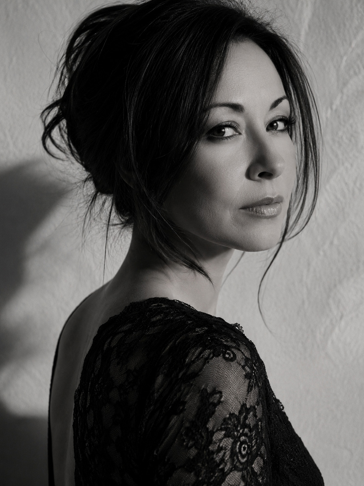
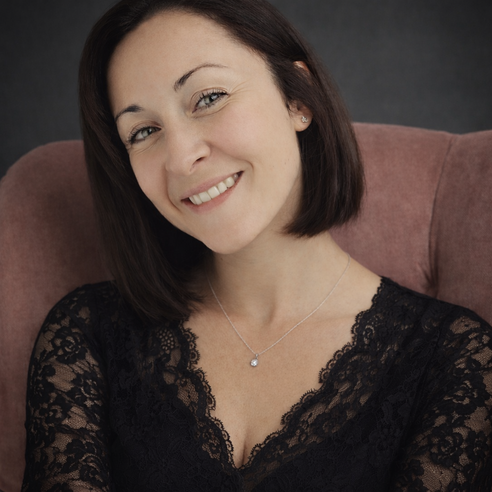

ORIGINE est un accompagnement privé de libération et de reprogrammation neuro-identitaire, guidé par ton thème astral, pour transformer les programmations inconscientes qui influencent ta manière d’aimer, de recevoir, de vendre, de te montrer, de poser tes limites et d’assumer ce que tu veux.
Réserver mon appel découverte
Tu as peut-être déjà fait une thérapie. Vu un psy. Testé des soins énergétiques. Fait du coaching. Lu des livres. Écouté des podcasts. Analysé ton enfance, tes blessures, tes schémas, tes blocages.
Tu as compris beaucoup de choses.
Et pourtant, malgré tout ça…
✦ Tu continues une relation avec quelqu’un qui te donne des miettes.
✦ Tu baisses tes tarifs pour ne pas que tes clientes fuient.
✦ Tu dis oui alors que t’as envie de dire non.
✦ Tu te caches dès qu’il faut parler de ton offre.
✦ Tu paniques au moindre compliment.
✦ Tu te sabotes dès qu’une vraie opportunité arrive.
C’est normal.
Parce que comprendre ton blocage ne suffit pas à le transformer.
À un moment, il faut le sortir de ton système.
Une réalité où tu annonces ton prix sans partir dans un monologue intérieur pour te justifier. Où tu reçois un compliment sans le minimiser. Où tu parles de ton offre clairement, sans tourner autour du pot et sans te cacher derrière du contenu inspirant parce que vendre te met mal à l’aise.
Où tu te montres sur les réseaux sans attendre le timing parfait, le bon niveau de confiance et trois validations extérieures. Une réalité où tu choisis ce qui est bon pour toi, même quand ça demande de dire non, de monter tes prix, de laisser partir celles qui veulent une transformation de dingue au tarif d’un soin découverte, ou d’arrêter de courir après une relation où l’autre te donne juste assez pour que tu restes accrochée.
ORIGINE te fait passer de la vie où tu subis encore tes blocages à celle où tu vis enfin tes désirs.

Je trouve complètement dingue qu’on puisse passer presque toute sa vie à vouloir plus et pourtant rester dans une vie raisonnable.
Une vie où tout a l’air d’aller bien de l’extérieur, mais où, à l’intérieur, quelque chose s’éteint doucement.
Moi, je crois qu’une femme peut tout avoir.
Sans se demander si c’est trop grand.
Sans réduire ses ambitions.
Sans négocier avec ses désirs comme si elle devait mériter le droit d’en vouloir plus.
Et c’est là que commence ma mission : libérer ce qui la garde sous emprise.
Les peurs, les conditionnements, les loyautés, les vieux schémas, les auto-sabotages.
Pas pour devenir une version 2.0.
Pour déployer tous les trésors qu’elle porte déjà en elle : sa puissance, sa magie, ses ambitions, ses désirs, sa capacité à créer beaucoup plus grand que ce qu’elle s’autorise aujourd’hui.
On est venues vivre une expérience extraordinaire, une vie dans laquelle l’amour, l’argent, la liberté, la réussite, le plaisir et l’expansion deviennent notre nouvelle norme.
Et c’est exactement à ça que je veux contribuer.
Dans les autres accompagnements, quand une femme a des blocages, on essaie souvent de remonter à la source en la faisant replonger dans son passé. On fouille, on analyse, on retourne dans les souvenirs, on cherche le fameux moment où tout a commencé.
Et parfois, oui, ça permet de comprendre certaines choses. Mais très souvent, ça remue beaucoup pour peu de résultats.
Parce qu’une peur, une croyance ou un auto-sabotage ne vient pratiquement jamais de ce dont tu te souviens. Ça vient souvent de beaucoup plus loin : d’un conditionnement installé pendant l’enfance, d’une loyauté familiale, d’un héritage transgénérationnel, d’une mémoire inconsciente, d’une expérience karmique.
Et c’est là qu’ORIGINE change complètement la donne.
Moi, je ne pars pas de ce que tu racontes. Je pars de ton thème astral.
Ton thème me montre directement où ton système s’est verrouillé, où il a appris à se protéger, où il s’est adapté, où il continue à te maintenir dans une vie raisonnable, très éloignée de tes véritables désirs.
À partir de là, le travail devient chirurgical.
Je vais chercher le blocage à sa racine, je libère ce qui le maintient en place, je reprogramme ce qui doit l’être, je shifte ce qui te maintient encore dans ton ancien fonctionnement.
Et surtout, avec ORIGINE, je descends là où le programme est inscrit.
Je travaille avec les ondes Theta. C’est l’état dans lequel le cerveau enregistre et transforme les croyances profondes, les programmes intérieurs et les réflexes automatiques. Et quand le programme change dans l’inconscient, ta réalité suit.
ORIGINE, c’est une transformation radicale de tes programmations inconscientes.
Choisis le niveau qui correspond à l’intensité du changement que tu veux créer. Chaque formule a son espace dédié pour entrer dans le détail.
3 mois pour faire sauter le verrou que tu veux libérer en priorité.
Tu choisis ton parcours : Magnétisme, Abondance, Souveraineté ou Renaissance.
Une formule ciblée pour concentrer toute la transformation sur ce qui bloque ton passage au niveau suivant.
6 mois pour transformer ta vie à 360°.
Je traverse les 12 grandes dimensions de ton existence pour libérer les blocages qui influencent ta manière d’aimer, de recevoir, de choisir, de réussir et de prendre ta place.
La formule la plus impactante pour changer radicalement ta réalité.
9 mois pour révolutionner et expanser ta vie.
Tu as toute la profondeur d’ORIGINE INTÉGRAL, avec en plus un accompagnement astrologique privé et personnalisé pour éclairer tes choix, tes décisions, tes périodes clés et tes mouvements d’expansion.
La version la plus complète et la plus exclusive pour celles qui veulent aller au-delà de la libération des blocages, activer leur pouvoir, prendre toute leur place et créer un impact à la hauteur de qui elles sont.
Depuis la dernière séance, je suis plus carrée : je commence un projet, je vais jusqu’au bout. Dans mon entreprise, l’impact a été considérable.
ClaraJe me sens vraiment souveraine. Comme si les chaînes s’envolaient petit à petit. Je sais où je vais, et ce que j’ai à construire devient de plus en plus évident.
CindyJ’ai retrouvé l’élan. Je suis à fond dans mon entreprise, avec la sensation d’avoir enfin trouvé ma mission. Je ne vois plus ça comme du travail, mais comme une vraie passion.
ÉlodieJ’ai vraiment l’impression de sortir d’un tunnel. Notre relation n’est plus la même, et c’est difficile à décrire tellement j’ai l’impression d’avoir changé de matrice.
MaudJe me sens beaucoup plus fondée à poser mes limites. Je dis non plus facilement, sans colère et sans drame. Je sens que je change les règles au lieu de replonger dans les anciens schémas.
CamilleLes choses se débloquent autour de moi. Je gagne en clarté, en structure, en énergie. Ce qui était flou devient concret, et je me sens beaucoup plus libre d’avancer.
LouiseRéserve un appel découverte de 30 minutes.
On verra ensemble quelle formule est la plus juste pour toi maintenant.
Réserver mon appel découverte